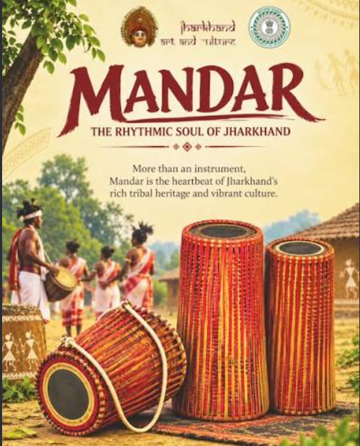
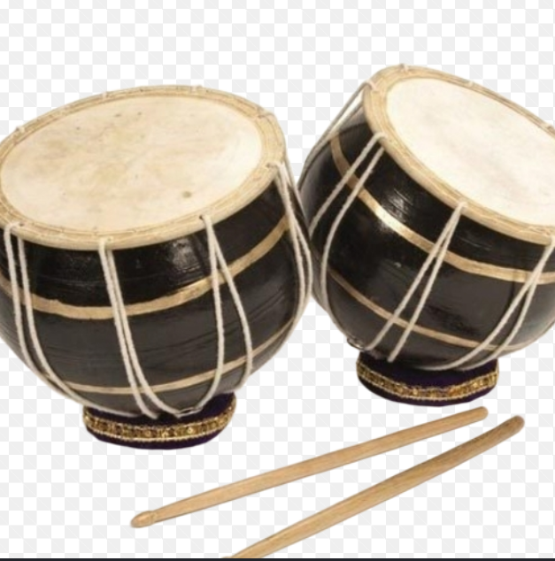
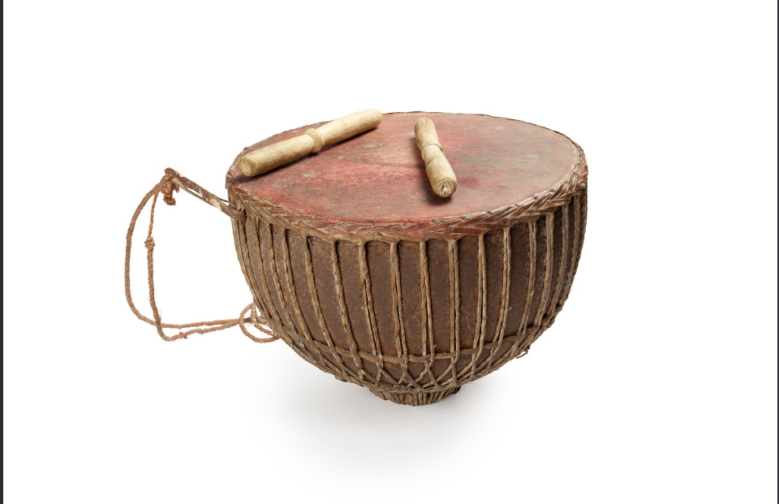
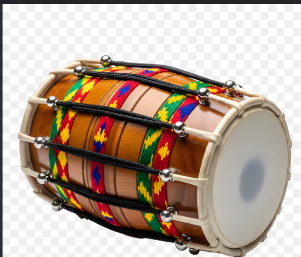
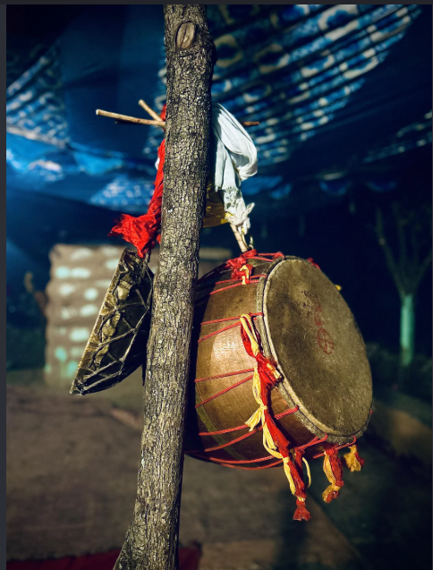
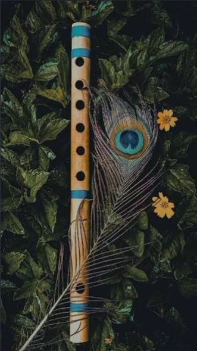
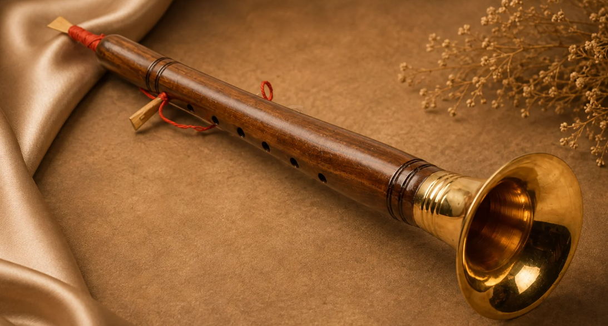
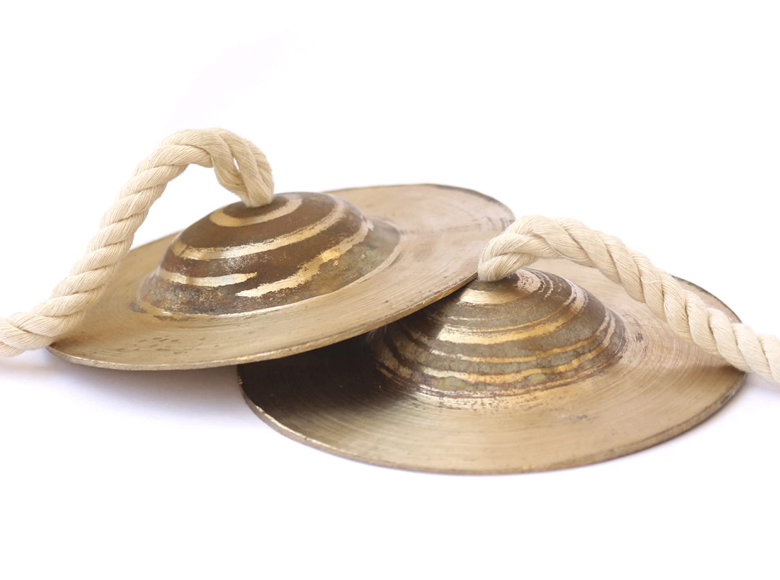

Traditional musical instruments are an important part of Jharkhand tribal culture. They are used in songs, dances, festivals, marriages, religious ceremonies and other community ceelebrations.

Mandar is one of the imporatant traditional drums used in jharkhand. It is a precussion instrument and is generally played with the hands. The strong beats of the Mandar are commonly used to accompany traditional tribal dances and songs.
Manadr is especially important during festivals and community celebrations. The rhythm of the drum helps dancers maintain their steps and creates an energetic atmosphere during performances.

Nagara is a traditonal precussion instrument that produces a loud and powreful sound. It is used during cultural progammes, festivals and other traditional occasions.
The powerful beats of the Nagara can be heard from a long distance. It is often used to create rhythm and announce important celebrations.

Tamak is a traditional drum associated with tribal music, particularly among the Santhal community. It is played with sticks and produces deep rhythmic sounds.
Tamak is commonly used along with other traditional instruments during songs, dances and culture celebrations.

Dhol is a popular drum used in many Indian folk traditional. It is also used in jharkhand's traditional musical performances.
Dhol provides a strong rhythm for dancres and singers. During festivals and celebrations, its beats create an energetic and joyful environment.

Dhamsa is a large traditional percussion instrument. It produces deep and powerful sounds and is used during traditional performances and community celebrations.
The instrument is especially useful for producing strong rhythmic beats that accompany group dances.

Bansuri is a traditional bamboo flute. It is a wind instrument that produces a soft and pleasant musical sound.
Bansuri can be used as a melodic instrument along with traditional songs and other percussion instruments. Its simple construction makes it an important traditional instrument in Indian folk music.

Shehnai is a traditional wind instrument. It is a distinctive sound and is commonly associated with celebrations, ceremoniesans special occasions.
In traditional performances, the shehani can provide melody while drums and other percussion instruments provide rhythm.

Jhanj is a traditional metal percussion instrument. It is played by striking two metal plates together to produce a rhythmic sound.
Jhanj can be used along with drums and songs to maintain the rhythm during traditional performances.
| Sl. No. | Instruments | Type | Use |
|---|---|---|---|
| 1 | Mnadar | percussion | Dance and festivals |
| 2 | Nagara | Percussion | Celebrations |
| 3 | Tamak | Drum | Traditional songs and dances |
| 4 | Dhol | Drum | Festivals and dances |
| 5 | Dhamsa | Percussion | Group performances |
| 6 | Bansuri | Wind Instruments | Melody and folk music |
| 7 | Shehnai | Wind Instruments | Ceremonies and celebrations |
| 8 | Jhanj | Percussion | Rhythm and songs |
Traditional musical instruments preserve the culture identity of jharkhand's tribal commmunities. They are not only used for entertainment but are also connected with social, religious and cultural activities.
The combination of drums, wind instruments, song and dances creates the distinctive sound of jharkhand's traditional music. These instruments are passed from one generation to another and continue to play an important role in cultural programs.
During festivals such as Sarhul, Karma and other traditional celebrationas, musical instruments are played along with traditional songs and dances. People participate in groups and celebrate their culture through music and dance.
The traditional musical instruments of jharkhand represent the rich cultural heritage of the state. Mandar, Nagara, Tamak, Dhol, Dhamsa, Bansuri, Shehnai and jhanj are examples of instruments used in traditional musical performances.
These instruments connect music with dance, festivals, community life and culture traditions. Therefore, preserving traditional instruments is important for protecting the cultural heritage of jharkhand.